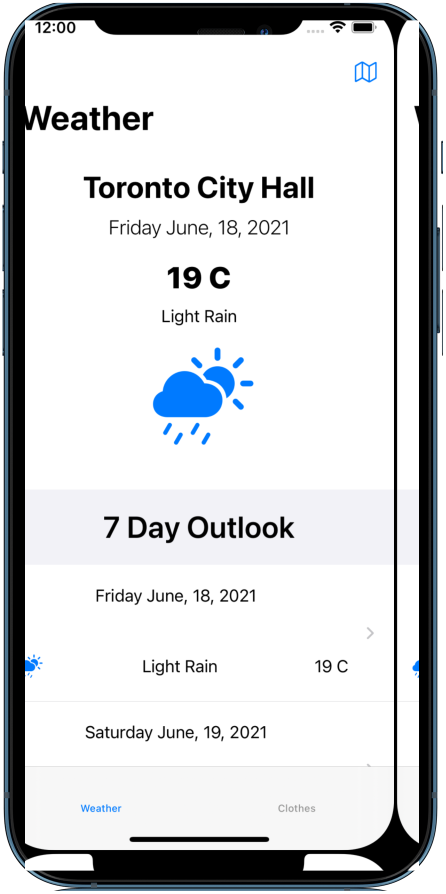

Weather Wear in Action

Weather ViewController
- Populating the weather data for this view controller starts with the "openMap()" function (line 87 in Github).
- The "openMap()" function is the action used to instantiate the MapViewController (MapVC). When the user chooses a location from the MapVC it triggers a callback function "callBackCoordinates()" from the WeatherVC and provides the latitude and longitude coordinates.
- The coordinates are used to get the weather data from the OpenWeatherAPI and return a weather object. That object is then passed to the "weatherDataDetup()" (line 101 in Github) which sets up the data properties that will populate the table view.
- The result as seen in the image is a header view detailing the current days weather for the location and below is the 7 day outlook data.
Setting up the data
Check out the Github
GitHubMap ViewController
- The MapVC is where the user can use a long tap gesture to drop pins on the map. It starts from the "dropPin()" function (line 56 in Github) where the long tap is converted into a coordinate from the map. That coordinate is then used to create a CLLocation object that contains the latitude and longitude information.
- The CLLocation object is saved to a local variable and used by two methods "lookUpCurrentLocation()" and "saveLocationsToUserDefaults(). The first function uses the location data to create an annotation and then adds the pin to the map. The second function saves the coordinate data to Userdefaults as part of an array so previously dropped pins can be readded to the map when loaded. "
- With the location pins placed on the map the user can tap on a pin and bring up an MKAnnotationView which presents a delete option and an option to get the weather data for the location (line 195-230 in Github). The right accessory button triggers the call back coordinates function thats called from the WeatherVC to get the weather data.
Marking locations on the map
Check out the Github
GitHub

Clothing Suggestions ViewController
- The ClothingSuggestionsVC is shown when the user taps on a table cell to show the weather for a day of the week. The controller uses a table view layout and its cells use a horizontal collection view to display the clothing items.
- The clothing items are brought into the controller by fetching them from core data. Items are filtered by setting the season property via the function "sortItemsBySeason()" (line 43 in GitHub). The function is called when the user selects a cell in the WeatherVC and the temperature is passed as a parameter.
- With the season property set, the table view delegate function "cellForRowAt" uses the array of clothing items and filters on the clothing season and clothing category fields (line 79-115 in Github). The result is a table view that displays only clothing items that match the specific temperature of the day based on the clothing items details.
Showing clothing items in the category cells
Check out the Github
GitHubClothes ViewController
- The ClothesVC is a collection view of all the clothing items that have been saved to core data. In this controller the user can add items, search for items and perform a multi-select delete function.
- A "Select" button is placed at the top left of the controller which enables the delete feature by switching the mode (line 34 in Github). When the mode is set to "select" the items in the collection view can be highlighted for deletion.
- The deletion works in both a filtered and unfiltered state. This is done by adding any selected items to a dictionary of [IndexPath:Bool], so when a item is selected its value is set to true.
- With the selected items values set to true the "deleteItem()" function (line 165 in Github) can be triggered by a button tap. The delete function works by collecting an array of index paths that will be deleted from clothing items in core data.
- The tricky part for the delete function is handling the case where the user has filtered the collection view and is deleting from a filtered state. The function handles this by checking if the "filteredClothingItems" array is not empty. A non empty array signals that the user is in a filtered state. A loop is used to check which items have been selected and the items index path in the filtered array is appended to the "deleteAtIndexPaths" array. It is also removed from the "filteredClothingItems" array to show visually the item was removed. Behind the scenes all the items indexes have been collected in a local array which is sorted and looped through to delete the items from core data and resave the context. The ClothingVC can then be reloaded by calling "fetchItems()" and the selection array "dictionarySelectedIndexPath" can be reset.
Deleting items from the collection
Check out the Github
GitHub

Add Item ViewController
- In order to add items to core data users must create clothing item objects by filling in all the details in the AddItemVC. This custom table view is designed to be a custom form that will be used for adding new items adding updating existing items.
- UITableView